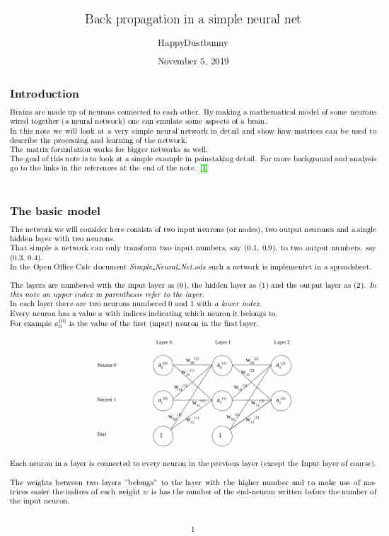

Rust
After about one and a half year of Python Toke thought we ought to move on.
I looked around and found that Rust was up and comming, so we bought the book "Programming Rust" by Blandy and Orendorff.
I read the book and explained the concepts to Toke, who went on to use them and show me how to think about Rust. A very exiting and challenging time!
N body
After making some exercises from the book we set out to try Rust's number crunhing abilities.
When I studied astronomy back in the late 1980ties simulations of star clusters were all the rage on supercomputers. I figured a modern gamer was a match for an old super computer and my hunch turned out to be right :-)
After som simplifying assumptions and tricks (See this note for details: N body Theory) we made a simulation.
I took care of the graphics using the Nannou package and Toke programmed the heavy lifting recoursive stuff.
By borrowing some code from the Mandelbrot example in the "Programming Rust" book we obtained multi threading and a speed boost of 8 times. It was amazing to watch the computer being able to run such heavy simulations.
The code for the simulation can be found on my Github page.
Simple neural net
After N-body we took a look at neural nets.
I read the theory and made a spreadsheet emulating the simplest possible neural net with three neurons : an input neuron, an output neuron and a single hidden layer consisting of one neuron.
I also wrote a note about simple back propagation about a six neuron network with one hidden layer of two neurons. The math looks horrendous because I include every painstaikning detail, but it is actually fairly simple, using nothing but high school math.
Then we made a neural net with two hidden layers of 8 neurons each capable of showing 4 bit binary numbers on a (2+)7 segment display.
Again I made the support structure and the graphics while Toke did the main programming of the back propagation. The code for the simple neural net is on Toke's Github page.
Handwritten number recognition
After this simple example we set out to make a neural net capable of recognizing handwritten numbers. We got the training data from Yann Lecun and was inspired by the YouTube video about neural networks by YouTuber 3Blue1Brown.
The handwriting recognition code is on Toke's Github.
Python Introduction to the Git commandline My Github repositories
Programmering foregår mest på engelsk, så jeg oversætter ikke mine sider om programmering til dansk.
Skift sprog øverst til venstre